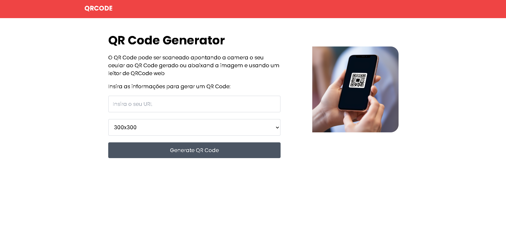

Gerador de QR Code
Ferramenta web para geração rápida de QR Codes a partir de URLs. Permite personalização do tamanho e oferece interface intuitiva sem necessidade de instalação.
HTMLCSSTailwindJavaScript
Ferramenta web para geração rápida de QR Codes a partir de URLs. Permite personalização do tamanho e oferece interface intuitiva sem necessidade de instalação.

Aplicação web completa para gerenciamento de tarefas pessoais. Permite adicionar, editar, excluir e marcar tarefas como concluídas, com persistência local de dados.

Plataforma completa de gerenciamento de usuários desenvolvida em PHP. Inclui sistema de autenticação, upload de imagens, publicação de conteúdo e controle de privilégios administrativos.

API RESTful completa seguindo padrões CRUD com 5 tabelas interligadas. Desenvolvida com foco em boas práticas de desenvolvimento e arquitetura de banco de dados relacional.
 Código Fonte
Código Fonte